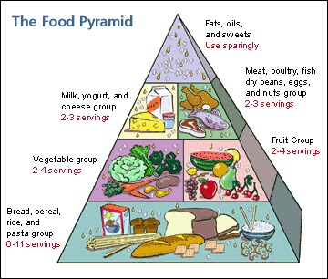
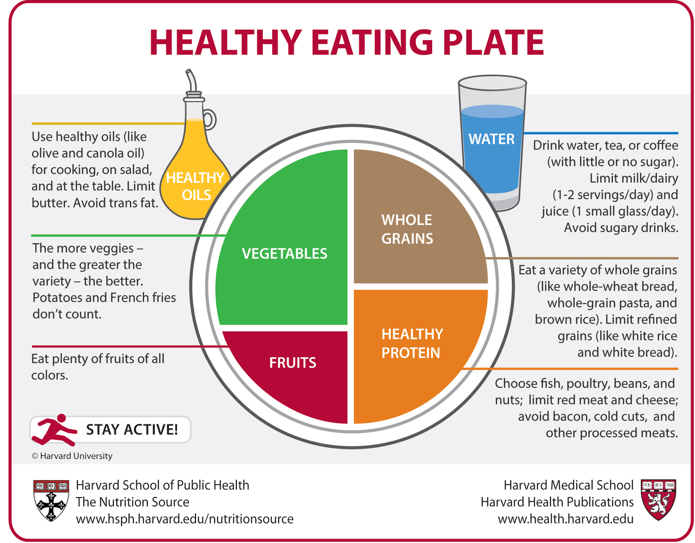
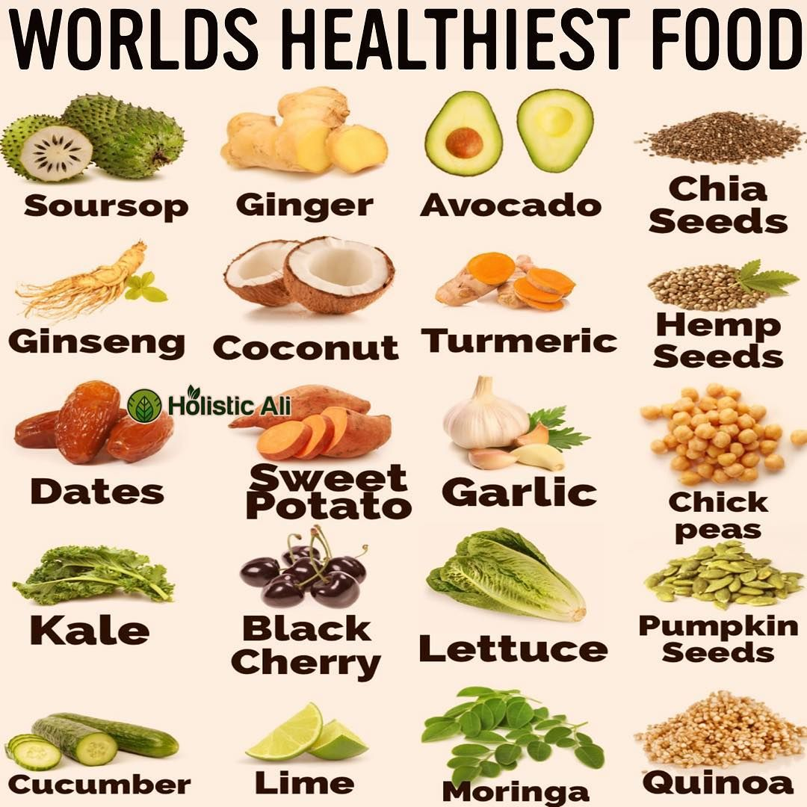

A healthy diet is essential for maintaining good health and preventing chronic diseases. It involves consuming a variety of nutrient-rich foods in appropriate portions to meet the body's nutritional needs. Here are some key principles of a healthy diet:Balance
Include a balance of different food groups, such as fruits, vegetables, whole grains, lean proteins, and healthy fats. Each group provides essential nutrients that contribute to overall health. Variety
Consume a wide range of foods within each food group to ensure a diverse intake of nutrients. Different foods contain different combinations of vitamins, minerals, and phytochemicals, which are beneficial for your health. Fruit and vegetables
Aim to include a variety of fruits and vegetables in your daily diet. They are packed with vitamins, minerals, fiber, and antioxidants. Try to have different colors of fruits and vegetables to get a wider range of nutrients.Whole grains
Choose whole grains like whole wheat, brown rice, oats, and quinoa over refined grains. Whole grains are higher in fiber and other nutrients, which can help with digestion and provide sustained energy.Lean proteins
Include lean sources of protein such as poultry, fish, beans, lentils, tofu, and low-fat dairy products. Protein is essential for building and repairing tissues, and it also helps keep you feeling full.Healthy fats
Incorporate sources of healthy fats like avocados, nuts, seeds, olive oil, and fatty fish (such as salmon and tuna). These fats are beneficial for heart health and help in the absorption of fat-soluble vitamins. Limit added sugars
Minimize your intake of foods and drinks that are high in added sugars, such as sugary beverages, candies, pastries, and processed snacks. Opt for natural sugars found in fruits instead.Reduce salt intake
Limit your consumption of sodium by avoiding excessive salt and salty processed foods. High sodium intake can contribute to high blood pressure and other health issues.Stay hydrated
Drink plenty of water throughout the day to maintain proper hydration. Limit sugary drinks and opt for water as your primary beverage.